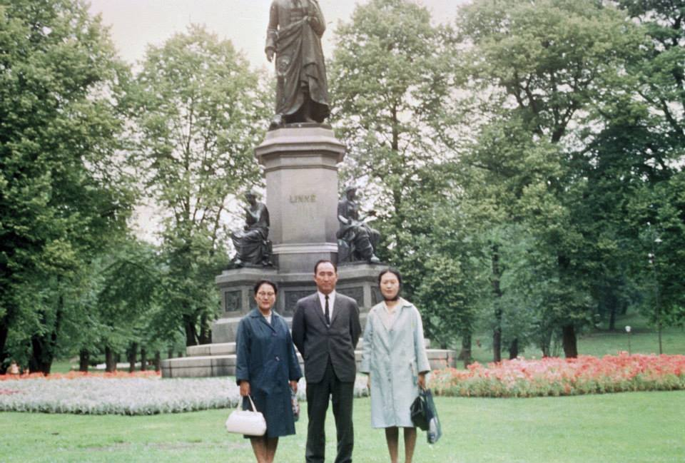
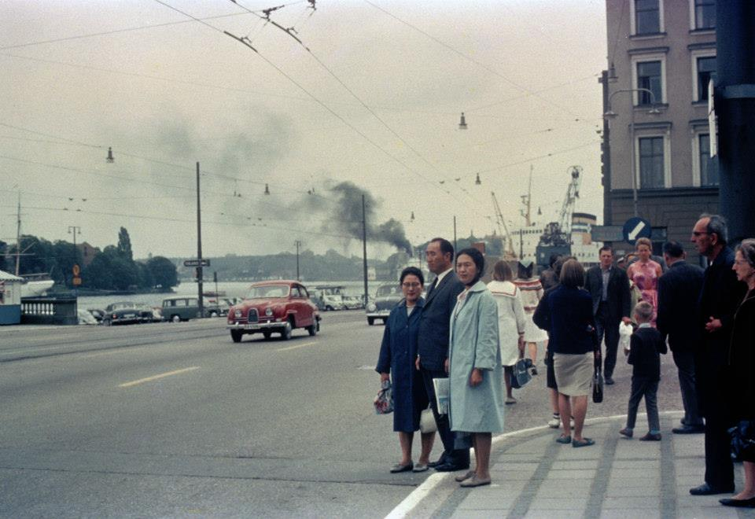
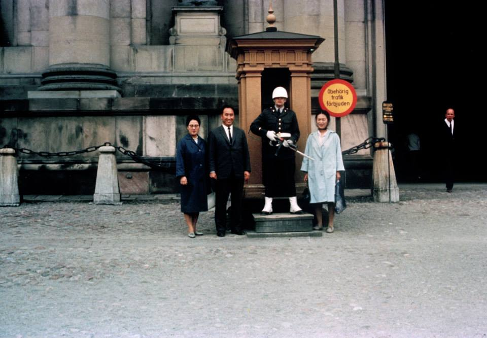
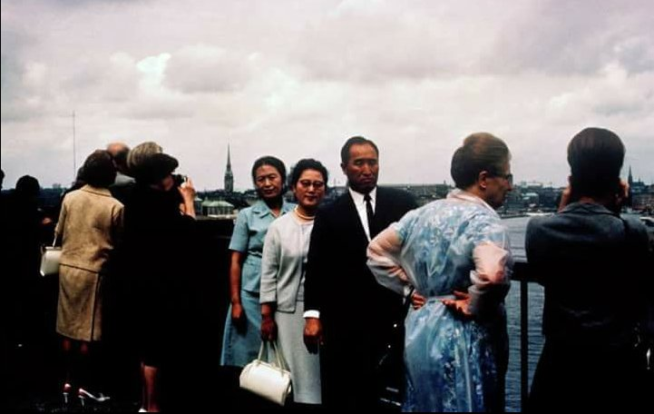
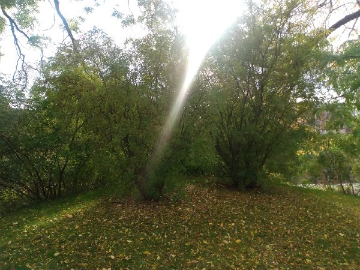

1965
1965 1 jan. ärets motto "Lät oss vara den segerrika hörskaren."
Little Angels, Koreansk barndansgrupp skapas.
28 jan - 10 okt Han och fru Won Pok Choi åker på den första världsturnén. Han besökte 40 länder, däribland Japan, USA, Kanada och flera länder i Centralamerika och Sydamerika, 17 i Europa, sex i Mellanöstern och åtta andra länder i Asien.
Första gången SMM avslutar bön med "in the names of True Parents" (i Sanna Föräldrars namn). Amen
Prayer: We Never Fully Realized How Difficult Your Path Has Been
Sun Myung Moon February 19, 1965
Los Angeles, CA
nov - Under tre seanser för det mycket kända amerikanska mediet Arthur Ford,
så vittnar den andliga världen om Hans messianska mission.
Citat:
Jesus från Galileen kommer inte att återvända - det behövs inte.
Kristus som manifesterade sig genom honom är evig - han kommer att manifestera
sig igen. (Kommentar: ny Adam)
5 jun Han möter Eisenhower vid Gettysburg.
20 juli 40 dagars sommar witnessing.
Han välsignar Heliga platser "Holy Grounds" på 120 platser i 40 länder.
I Stockholm välsignar Han en Helig plats & träd i Humlegörden den 24 juli.
Kuriosa; Enligt Jan-Peter: 1970 ett år efter att 1:a missionären Friedhilde kommit till Sverige,
gick hon till Holy Ground i Humlegården Stockholm.
Där var en grupp arbetare från kommunen som berättade för henne att trädet
inte mådde bra, det måste kanske huggas ner.
Nej, nej! utbrast Friedhilde. Det är ett träd välsignat av en helig man från Korea.
Arbetarna lyssnade och sa dom skulle höra med hortonomer om trädet kunde räddas.
Jo det kunde det... och
trädet står kvar idag, räddat av Himlen.
   
Kuriosa;
Finland besöktes aldrig 1965 av Sanna Far, eftersom Han blev (felaktigt) tillsagd att
Finland var kommunstiskt, granne med Sovjet och farligt att besöka.
Kommentar: Halva östra europa var ju östblocket under Sovjet. På kartan såg det onekligen ut
som om Finland hörde till det.
Senare valde europaledaren Paul Werner en helig plats i parken Kaivopuisto/Brunnsparken.
Danmark [2021-10-13] Lars Bruun de Neergaard:
Hej Bengt,
felaktig Holy Ground/Helig mark, var i Kings Garden/Kungens trädgård, som bara ligger tvärs över
gatan i Botaniska trädgården. Kanske 300 meter från varandra. Felet skedde på grund av en felaktig
läsning av vår koreanska missionär, av Sanne Fars vykort (som han skrev direkt efter att ha gjort
helig mark). På vykortet är foto av den botaniska trädgården.
Sanne Far skriver faktiskt att den heliga marken finns i den botaniska trädgården, och att King
Garden ligger bredvid den, men lästes fel som motsatsen: att den botaniska trädgården låg bredvid
King Garden, där den heliga marken gjordes. Men Won Pok Chois dagboksanteckningar är mycket tydliga och detaljerade, av platsen, ner till
plus minus 5 meter, men vi fick den först 10 är senare. Det slutade med att bli en "lycklig
felläsning" eftersom Sanna Mor erkände och "välsignade" den heliga marken 2006, som den koreanska
nationella Messias valde där genom bön 2003, så nu betraktar vi båda som heliga och värdefulla
i sig själva.
Eller så kan du till och med säga "med plus minus 1 meters noggrannhet" i Mrs, Chois dagbok,
Här är ett foto jag tog igår efter att ha bett. Mrs Chois anteckningar informerar om att den
heliga marken gjordes på den lilla kullen. Intressant att de 2 buskliknande träden planterades
där 1965, enligt Botaniska trädgårdens register, men datumet är inte registrerat.

Fars ord i oktober 1969: "Ni kanske inte är medvetna om detta, men missionärer har redan rest
ut till Norge, Sverige, Danmark, Grekland och andra platser.
Om jag berättar för dem var jag valt heliga platser under min världsturné kommer de att åka dit".
Citatet kan hittas i "Sun Myung Moon's Life In His Own Words"/ Part 37 :
"Organization and Outreach in
Chaotic Times"
14 aug. In-Jin Nim föds.
10 okt. Han kommer tillbaka från världsturnen.
25 dec. 40 dagars vinter witnessing.
Kuriosa: 2024 Under HDH (studie av Sanne Fars ord) delade Elisabeth ett intressant
vittnesbörd om en historikergäst, för länge sedan i Tyskland, som blev intresserad
och studerade den koreanska Moon-släkten och spårade den tillbaka till Israel.
Här ett citat från SMM:s svar 1965;
Fråga: Fanns det en fysisk hörstamning i Återkomsten?
Miss Young Oon Kim: Han antyder att det finns en koppling mellan det judiska
och det Koreanska folket, men han kommer inte att säga mer.
Vi har många seder och traditioner som är väldigt lika judiska seder.
Det finns ett talesätt som säger att Korea är Österns Israel.
(Pyong Yang "Jerusalem of the East")
Källa:
https://www.tparents.org/moon-books/sm-mast/MSTRSP-1.htm